Turning Polynomials into Polygons
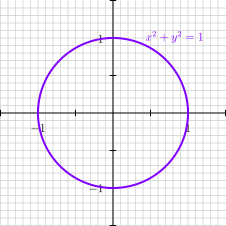
The Unit Circle
Theorem 1 (Bézout’s Theorem) If \(f(x, y)\) has degree \(p\) and \(g(x, y)\) has degree \(q\) then generally the system \(f(x, y) = 0\), \(g(x, y) = 0\) has \(pq\) intersections.
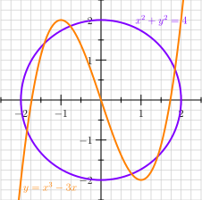
The circle (degree 2) and cubic (degree 3) have 6 intersection points
1971: George Bergman The logarithmic limit-set of an algebraic variety
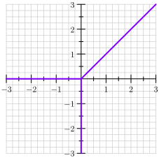
A Tropical Line
Let \(p\) be a prime number.
Definition 1 For integers: \[ v_p(n) = \text{the largest power of $p$ that goes into $n$} \]
Definition 2 For rationals: \[ v_p(m/n) = v_p(m) - v_p(n) \]
Example 1 \[ v_5(200/125) = v_5(5^2 \cdot 2^3) - v_5(5^3) = 2 - 3 = -1 \]
Remark 1. They behave like logarithms
\[v_p(x + y) \ge \min\{v_p(x), v_p(y)\}\]
\[x + y - 1 = 0\]
How do \(v_p(x)\) and \(v_p(y)\) relate?
Start with an equation:
\[V(x + y - 1) = \{x + y - 1 = 0\}\]
Tropicalize:
\[V(\bar{x} \oplus \bar{y} \oplus 0) = \{\text{min occurs at least twice}\} \]
Notation: \(V\) means vanishing set or variety, \(\oplus = \min\).
\[\min\{\bar x, \bar y, 0\}\]
Cases:
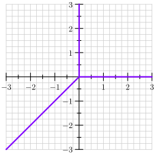
…And it’s upside down
How to compute the tropical curve associated to a tropical polynomial?
\[ f(x,y) = 75 + 10x - 12y + 25xy \]
Record the valuation \(v_5\) at each monomial:
\[ \mathrm{trop}(f) = 2 \oplus \bar 1x \oplus \bar y \oplus 2 \bar x \bar y \]
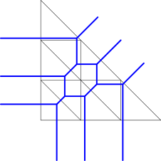
A degree 3/genus 1 tropical curve
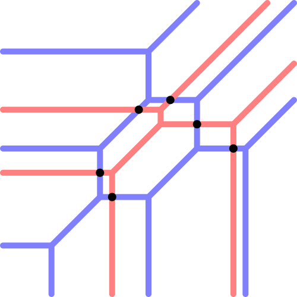
Bézout’s theorem for tropical curves: a degree 3 and degree 2 tropical curve intersect in 6 points generically
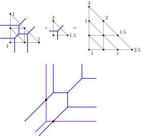
Cells corresponding to intersections are quadrangles. Multiplicity of intersection = area of quadrangle
A smooth cubic curve is called an elliptic curve
Weierstraß form \[ y^2 = x^3 + px + q \]
As complex surfaces these are toruses (genus 1)
An tropical curve
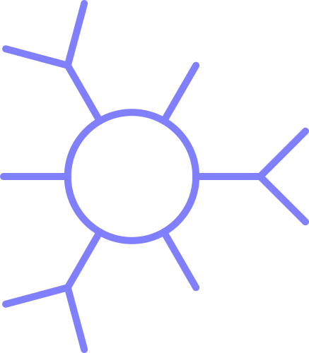
An abstract tropical curve
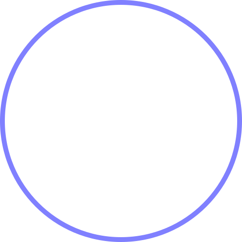
An abstract tropical curve (skeleton)
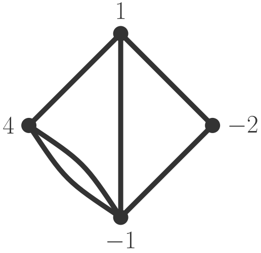
Points on an abstract tropical curve
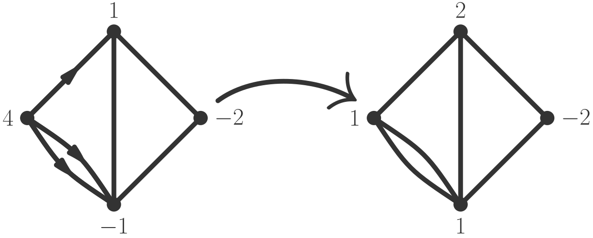
Borrowing/Lending Move
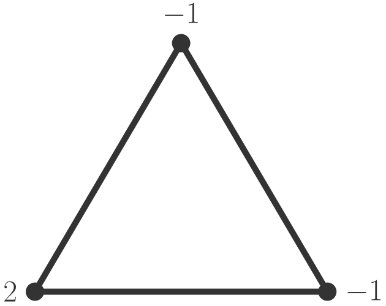
Can you win the dollar game?
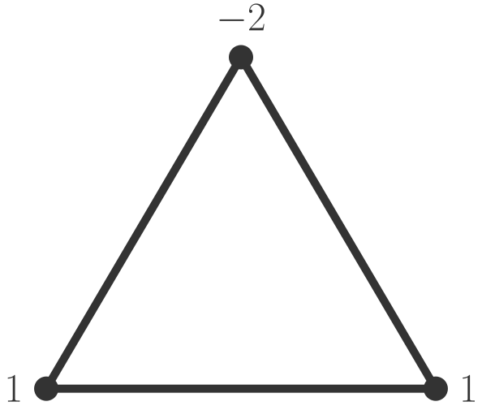
Can you win the dollar game?
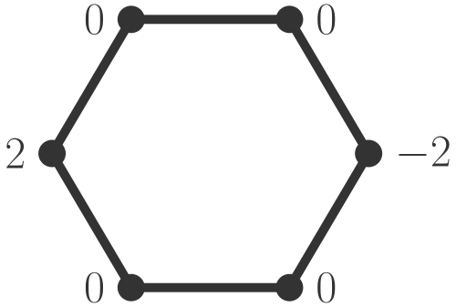
Can you win the dollar game?
Let \(D\) represent a given dollar game.
\[\deg(D) = \text{total dollar amount of } D\]
If a graph has genus \(g\) then for any game \(D\)
\[r(D) \ge \deg(D) + 1 - g\]
If a surface has genus \(g\), and \(D\) is a finite set of points with multiplicities. Consider the set of rational functions whose poles are not worse than the numbers specified in \(D\).
E.g. \[f = \frac{(x + 2)^4(x - 3)}{(x + 5)^3(x - 7)}\]
\[\mathrm(f) = \{4 \text{ at } -2, 1 \text{ at } 3, -3 \text{ at } -5, -1 \text{ at } 7\}\]
This is ok for \(D\) = no worse than \(-3\) at \(-5\) and no worse than \(-2\) at \(7\).
A sum of two rational functions which is ok for \(D\) is also ok for \(D\). Likewise any constant multiple is ok for \(D\).
I.e. it is a vector space
Let \(\ell(D)\) be the dimension of this space.
Theorem 2 (Riemann-Roch) \[\ell(D) \ge \deg(D) + 1 - g\]